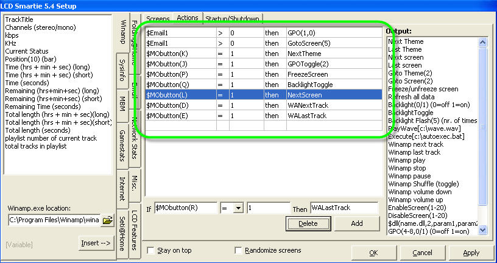

Menu Plugin for LCD Smartie
Pressed menu key - menu appears.Pressed next key - cursors moves down
Pressed next key - menu scrolls up
[I need some pictures of this plugin]
FAST START GUIDE
If you hate reading instructions and you've got a Crystalfontz 633 or 631 then here's the fast start guide:
- Download zip file
- Exit Smartie
- Extract menu.dll to smartie's plugins subdirectory
- Extract config-cfaXXX.ini to smartie's top directory
- Backup the existing config.ini to config.ini.bak
- Rename config-cfaXXX.ini to config.ini
- Start Smartie, see demo screens
- Edit/Copy demo screens
Introduction
This is a plugin that makes it possible to use menus on your display. The plugin will show the currently selected menu option, and perform specified actions (goto screen, turn gpo on/off, etc) when a menu option it activated. The plugin supports menus larger than the screen, the menu will automatically scroll up and down. It also supports horizontal and vertical menus.
Limitations
This plugin requires display keypad input to work, so only displays with keypads that are supported by LCD Smartie will be able to use this plugin. [At the time of writing supported displays were Crystalfontz CFA631 & CFA633, Matrix Orbital displays with a keypad, and Palm PDAs.]
Download
Menu Plugin Alpha 1 can be downloaded here.
Install
To install this plugin copy the menu.dll into the plugins directory of LCD Smartie. [Only the 5.3 beta 2 and above builds are supported.]
The zip file also includes demo config files for Crystalfontz displays CGA631 & CFA633, that show how the plugin can be used - backup your config.ini file before renaming these as your config.ini.
Usage - Overview
To use the plugin you will need to insert commands into the your screens (so the menu can be created and displayed) and add actions (so the plugin can receive input and carry out actions).
Usage - Actions
The plugin needs actions to be setup so it can receive key presses and notification of screen changes.
KeyPad actions
The menu plugin needs to know when the keys for "Previous menu item", "Next menu item" and "Select menu item" are pressed. This is done by tieing a keypress condition {$MObutton([key])} to a plugin call {$dll(menu,9,[keytype],[non-menu action])}.
The form of this command is: $dll(menu,9,[keytype],[non-menu action])
Where:
- [keytype] - is one of p, n, s [p=Previous menu item, n=Next menu item, s=Select menu item]
- [non-menu action] - this is the action to perform is a menu is not currently active. This is useful for using the keys for non-menu tasks when not in a menu.
An example set of key actions are:
- $MObutton(E) = 1 then $dll(menu,9,p,WALastTrack)
- $MObutton(F) = 1 then $dll(menu,9,n,WANextTrack)
- $MObutton(I) = 1 then $dll(menu,9,s,0)
Screen changed actions
The Menu plugin needs to know when the active screen changes, this is so it knows when we're no longer in a menu. To do this an action must be added to call our plugin when the screen changes
The command takes this form: $dll(menu,8,0,0)
An example action is:
- $ScreenChanged = 1 then $dll(menu,8,0,0)
Enter/Leave menu actions
This step is optional, but it's nice to have a key setup to enter and leave the menu. This plugin provides a command that takes two actions, it will execute one of them if we're in a menu and otherwise execute the other. This can be used to setup a menu key
The command takes this form: $dll(menu,7,[non-menu action],[menu action])
An example action is:
- $MObutton(J) = 1 then $dll(menu,7,GotoScreen(19),GotoScreen(2))
Action Summary
An example set of required actions are:
- $ScreenChanged = 1 then $dll(menu,8,0,0)
- $MObutton(J) = 1 then $dll(menu,7,GotoScreen(19),GotoScreen(2))
- $MObutton(E) = 1 then $dll(menu,9,p,WALastTrack)
- $MObutton(F) = 1 then $dll(menu,9,n,WANextTrack)
- $MObutton(I) = 1 then $dll(menu,9,s,0)
Usage - Screen
To create and display a menu, one command is needed to setup the menu and display the first item, and another is needed for each extra line there is in the menu.
Creating
The command for creating menus takes the form: $dll(menu,1,[displayed length]#[item1name]=[item1action]#[item2name]=[item2action], [menuname])
There can be as many [itemname]=[itemaction] pair as you need.
where:
- [displayed length] - is how many menu items you're going to display. The plugin needs to know this so it can correctly scroll the menu if it is longer than the displayed length.
- [item1name] - this is the text to display for the menu item
- [item1action] - this is the action to perform when this menu item is selected.
- [menuname] - this is a unique name for this menu, this name must not be used on any other screen. This name is never displayed, and is needed for internal maintainance reasons.
An example is:
- $dll(menu,1,2#Test=GotoScreen(1)#Test2=GotoScreen(2)#Test3=GotoScreen(3), MyMenu)
Remaining items
To display the remaining menu items, you need to use command $dll(menu,2,[line],0) where [line] is the required line; 2 is the second item, 3 the third.
Summary
An example menu:
- Line1: $dll(menu,1,2#Winamp...=GotoScreen(20)#Disk info=GotoScreen(4)#Memory info=GotoScreen(5),Menu1)
- Line2: $dll(menu,2,2,0)
Tips
- Uncheck 'Enabled' on menu screens - you don't want them appearing during the automatic screen cycle.
- To implement a menu with a timeout, set a 'Time to show'.
- To implement a menu with without a timeout, check the 'Sticky' option.
- To implement submenus simply add a menu option that takes you to a screen with another menu defined.
- Remove or review carefully any existing actions using keys.
More images
This is from one of the demo menus, setup for a 2 line display.
Pressed menu key - menu appears.Pressed next key - cursor moves down.
Pressed next key - menu scrolls up.
Pressed prev key - cursor moves up.
Pressed prev key - menu scrolls down.
Pressed select key - sub menu appears.
Pressed next key - cusor moves down.
Pressed next key - menu scrolls up.
Pressed next key - menu scrolls up.